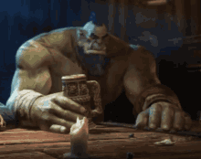

Orc

Habilidades de Força e Tank:
- Golpe Brutal: O Orc executa um poderoso golpe de machado ou clava, causando grande dano a um único inimigo e com chances de atordoá-lo por um turno, deixando-o vulnerável a ataques subsequentes. (Requer 10 de Força, 6 de Velocidade)
- Fúria Selvagem: O Orc entra em um estado de fúria, aumentando significativamente seu dano e resistência por um curto período. Durante esse tempo, o Orc também recebe menos dano de inimigos e se torna mais difícil de ser derrubado. (Requer 9 de Força, 8 de Ego)
- Manto de Ferro: O Orc cria uma camada de energia protetora que funciona como uma armadura adicional, reduzindo o dano recebido por ataques físicos e mágicos. Dura alguns turnos e pode ser ativado quando a saúde do Orc está abaixo de 50%. (Requer 8 de Força, 7 de Ego)
- Destruição de Terra: O Orc bate o chão com uma força esmagadora, criando uma onda de choque que causa dano massivo aos inimigos ao redor e os empurra para longe, quebrando formações e interrompendo habilidades inimigas. (Requer 10 de Força, 7 de Velocidade)
- Carregamento de Besta: O Orc usa sua enorme força para correr e colidir com os inimigos, causando dano massivo e derrubando-os no chão. Esse ataque pode quebrar escudos e desorientar os inimigos atingidos. (Requer 9 de Força, 6 de Velocidade)
- Grito de Guerra: O Orc solta um grito ensurdecedor que aumenta a moral dos aliados próximos, concedendo-lhes um bônus de ataque e defesa por um tempo limitado. Inimigos dentro do alcance também têm suas defesas reduzidas. (Requer 8 de Ego, 6 de Força)
- Recuperação Rápida: O Orc regenera rapidamente uma parte de sua saúde após receber dano, se curando lentamente ao longo de alguns turnos. Pode ser usado em combate para aumentar sua durabilidade. (Requer 7 de Força, 5 de Ego)
- Ataque Devastador: O Orc executa um ataque com sua arma que causa dano massivo em área ao redor dele. Esse ataque também tem uma chance de causar um efeito de sangramento nos inimigos atingidos. (Requer 10 de Força, 8 de Velocidade)
- Fortaleza Imbatível: O Orc ativa uma habilidade que torna seu corpo temporariamente quase imune a danos, aumentando sua resistência física e tornando-o imune a atordoamentos ou efeitos de controle de movimento por um tempo determinado. (Requer 8 de Força, 9 de Ego)
- Pancada de Terra: O Orc levanta o inimigo do chão com um poderoso golpe e o arremessa contra o solo, causando grande dano e interrompendo habilidades inimigas, enquanto gera um tremor que afeta a estabilidade de todos os inimigos próximos. (Requer 9 de Força, 7 de Velocidade)